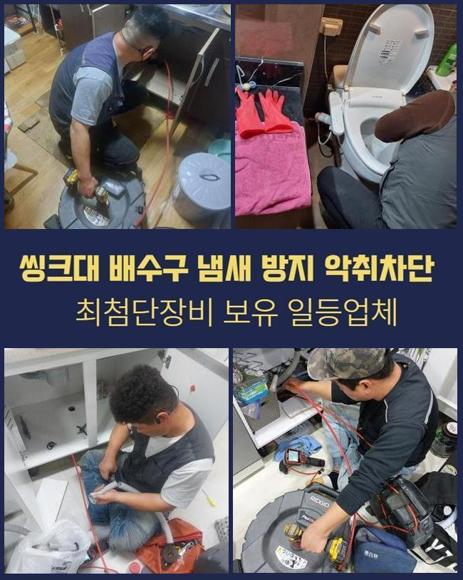
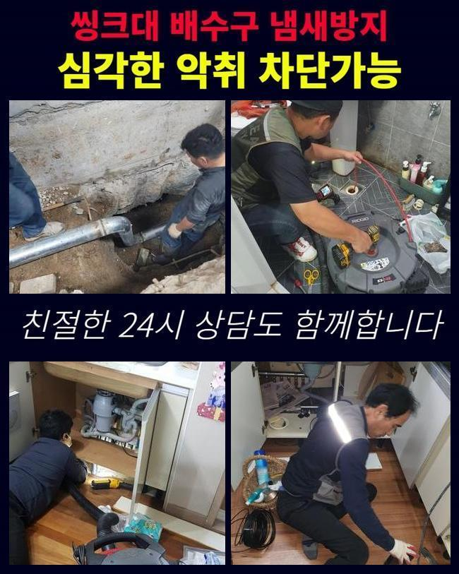
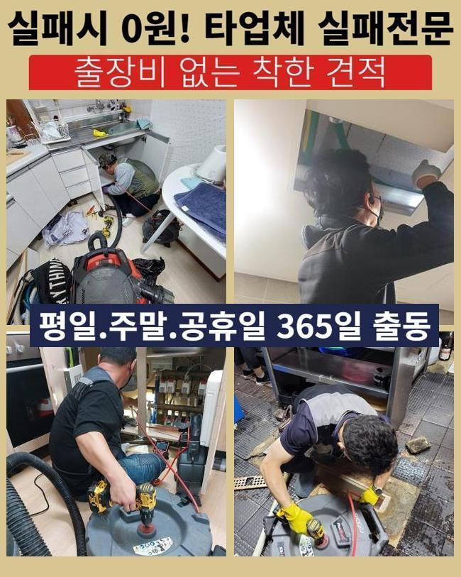
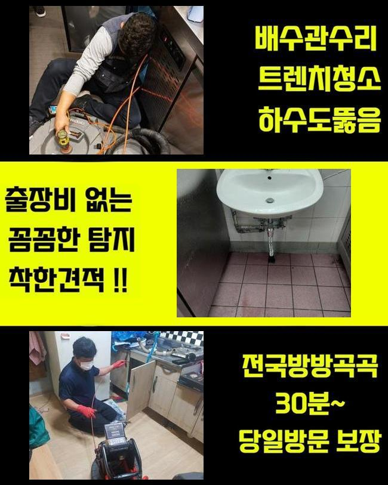
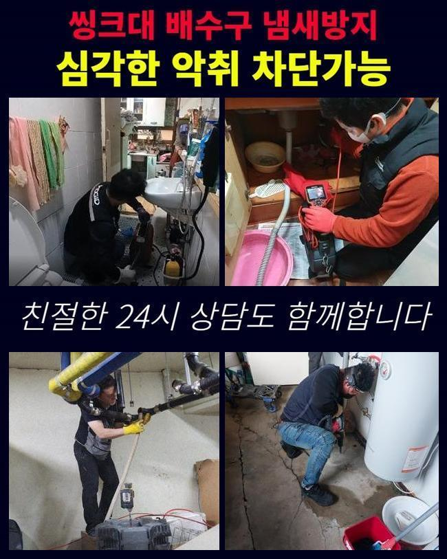
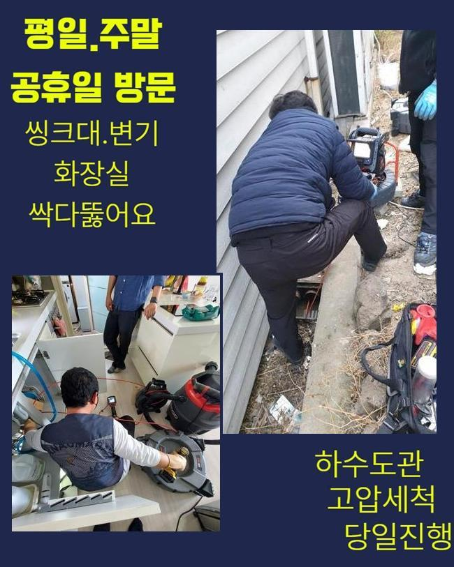

🏠 갈현동대변기막힘 주암동 하수구뚫어주는업체 설비업체
용인 변기막힘 전문 시공 후기

📋 작업 개요
- 위치: 용인
- 서비스 유형: 변기막힘, 하수구막힘, 배관막힘, 누수수리, 역류해결, 뚫는업체, 고압세척, 악취차단
- 작업 일시: 2025. 2. 6. 10:56
- 업체명: 하수구수사대 (010-5615-2118)
🔍 문제 상황
갈현동대변기막힘 주암동 하수구뚫어주는업체 설비업체
집안에서 물막힘이 일어나는 정황은 살다가 한두번은 겪어보았을거라 생각해요
특히 욕실 및 개수대에서 발발하는 정체현상은 일상에 곤란함을 유발하게 되겠죠
그럼 주방시설에선 왜 막힘이 발발하는건지 생각해봐야 하겠습니다
개수대는 요리과정에서 생겨나는 여러종류의 노폐물과 미세한 수세미 파편들이 관에 누증되어 정체가 생기는거죠
이런 상황이 지속되면 배수기능이 사라질뿐만 아니라 구린내가 올라오며 점차적으로 배수관이 낡게되어서 물샘까지 불러올수 있죠
보통 해당 사태가 생겼다면 시중의 제품을 사용하여 처치해나가시려 하시죠
그렇지만 그런 방안은 단기간의 정리만 해줄뿐 본질적 사유를 정리하지않으면 유사한 사태가 갱발하기 쉬워요
차단을 만든 잔재들이 관의 밑부분에 존재한다면 보통사람들이 그것들을 포착하거나 소멸시키기 힘듭니다
또 서툴게 수리를 한다면 반대로 배관을 훼손하거나 잔재들을 적절히 처치하지 못하는거죠
이런 이유들로 배수관 정체가 생겼다면 배관전문업체에게 의뢰해서 정확하고 온전히 처치하는게 바람직합니다

🔎 원인 분석
💡 전문가 진단: 정밀 진단 장비를 사용하여 슬러지의 고착 여부를 판명하고 타격/세척 작업을 실시했습니다.
일주일전에 저희팀은 배수관정체 관련하여 시공문의를 받았어요
의뢰자께서는 배관정체로 인해서 역류 및 악취발생이 심하여 평범한 삶에 커다란 지장을 경험하고 있으셨답니다
오취가 심각하여 생활을 이어나가기가 힘겨웠고 역류현상까지 생겨 화장실이 더욱 지저분해지는 형편에 닿게 됐다 말하셨습니다
의뢰인의 시급한 사태를 고려해서 즉각적으로 문제의 장소로 이동했죠
댁에 방문한뒤 의뢰자와 상담하고 고장상황을 자세히 검사했습니다
의뢰인께선 욕실에서 생활하수가 빠지지 못하는 것은 물론 역류증세까지 간헐적으로 나타나 내부가 오염된 상황이라면서 빠른 해결을 원하셨죠
10일전부터 해당 정황이 생겼는데 놔뒀더니 더더욱 심각해진 모습이었답니다
그러할때 간단하게 배관통수를 시행해서는 문제점을 해결해나가기 어렵죠
침전물이 관로에 강력히 고착화되어 있는거라서 안쪽의 정황을 조사한뒤 합당한 플랜을 짜서 시공에 나서야 하겠습니다
내부에서 생겨난 트러블은 육안으로 검사하기 힘들때가 많죠
그러한 이유로 저희팀에선 배관내시경을 활용해 관로내부 현황을 밀도있게 관찰하는 시공을 이어나갔습니다
내시경을 통해 들여다보니 하수관 내측엔 상당기간 누적된 음식쓰레기와 유분찌꺼기들이 뒤섞여 물길을 완전하게 가로막는 상황이었어요

🔧 작업 과정
게다가 이물들이 견고하게 자리를 잡아서 단순히 물세정으론 해소가 어려웠답니다
검사를 마무리하고 분쇄장비를 가동시켜 관로에 고정된 잔재들을 처치하는 시공을 속행하였습니다
플렉스샤프트는 배관안에 고착화된 오물들을 빠르게 파쇄하고 없앨수 있기에 다양한 혼합슬러지들이 굳었을때 지대한 영향력을 끼치죠
샤프트기기는 회전능력을 통하여 이물들을 자잘하게 쪼개서 배관면에 체류중인 억센 석회물질이나 기름슬러지를 온전히 처리해낼수 있는거죠
그렇지만 힘을 과하게 가하여 시공을 이어나간다면 파이프가 고장날수도 있으므로 전문적 테크닉과 주의깊은 시공이 요망되죠
금번 내방드린 장소는 게다가 이물들이 배관에 견고하게 자리잡은 경우였기에 한두번의 작업으론 정리하기 어려웠답니다
관로 곳곳에 체류하는 백회물질은 한층 그런 형국을 악화시켰죠
그러한 이유로 저희팀에선 물세척 공정과 분쇄기기를 동반하여 사용하며 이물들을 정리하고 깨끗이 제거하는 작업을 단행하였어요
강력한 힘으로 이물들을 정리할 땐 파편이 주변으로 흩날리지 않게 신경써야 합니다
오물들이 흩어져 근방이 심히 오염된다면 수습이 어려워질수도 있기에 집중해서 작업해나가야 하는거죠
그러하기에 작업과정에서 해당되는 문제들을 막으려 보양작업을 진행했고 의뢰인분께서 우려하지 않으시도록 안전하게 업무를 시행하였죠
찌꺼기를 제거하고나서 재차 배관카메라를 집어넣어 관을 진단해보았습니다
안에 상존하는 기름슬러지나 부가적인 트러블을 검사하는건 굉장히 막중한 과정이죠
금번의 업무에서는 수회 관로 안을 탐지하여 동시에 일어날 가능성이 높은 트러블을 예방했어요
전반적으로 노폐물들이 없어진걸 체크하고 수돗물을 내려보내며 배수성능이 돌아왔는지 테스트해 보았죠
정상으로 사라지는 정황을 직각적으로 검증하였어요
배수공으로 폐수가 시원스럽게 흘러가는 정황을 의뢰자께도 확인시켜드렸고 확실하게 마무리되었다는 걸 확인했어요
사태를 방치하는 바람에 노폐물이 한층 늘어난다면 주위세대분에게 문제가 파급될수 있답니다
그러한 상황에서는 생각해야한 내용이 더더욱 증가할수 있어서 미리 검사를 받아보시는게 좋아요


✅ 작업 완료
그리고 하수구막힘은 평상시의 생활에 트러블을 일으키기에 가급적이면 재빠르게 처리해야 돼요
하수관 정체가 증대된다면 고약한 냄새는 물론 배관손상으로 야기된 누수증상까지 일어날수 있다는것도 인지하고 있어야 하겠죠
공정을 시작하기 전에는 필수로 합당한 수리기기를 갖추고 있어야 돼요
그렇게되지 않는다면 배관조사를 온전히 못하는 상황이 나타나 다시 막힐수도 있어요
배관에 일어난 문제들로 수선이 요망되신다면 아무때라도 저희측에 문의해 주십시오



⚠️ 베란다 누수 및 방수 관리 방법
- ✅ 비가 많이 올 때 창틀 주변이나 아래층 천장에 얼룩이 생기는지 정기적으로 확인해 보세요.
- ✅ 우수관 주변 실리콘 마감이 들뜨거나 깨진 틈새가 있는지 손상 여부를 수시로 체크하세요.
- ✅ 베란다 바닥 타일의 줄눈(메지)이 소실되면 그 틈으로 물이 침투하여 누수가 유발됩니다.
- ✅ 누수 의심 증상 발견 시 방치하면 아래층 손실이 커지므로 즉시 전문가의 진단을 받으십시오.
💡 핵심 정리
- 확실한 장비 작업(내시경 점검 및 샤프트 스케일링)으로 원인을 뿌리 뽑습니다.
- 작업 후 1년 이내에 동일한 부위 재발 시 100% 무상 A/S 서비스를 보장합니다.
- 서울 · 경기 · 인천 전 지역에 24시간 언제든 긴급 출동할 수 있도록 항시 대기 중입니다.
❓ 자주 묻는 질문 (FAQ)
🚨 용인 변기막힘 문제로 고민이신가요?
정확한 원인 진단과 확실한 시공으로 재발 없는 해결을 약속드립니다.
24시간 긴급 출동 | 서울 · 경기 · 인천 전지역 | 1년 내 재발 시 무상 A/S